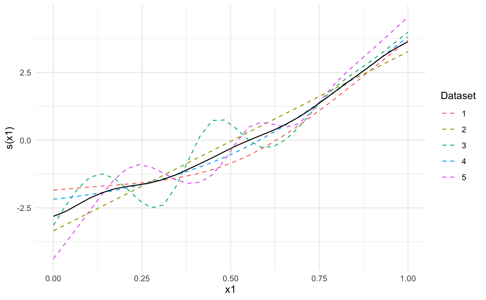

Meta-analysis of generalized additive models
metagam( models, grid = NULL, grid_size = 100, type = "iterms", terms = NULL, method = "FE", intercept = FALSE, restrict_range = NULL )
| models | List of generalized additive models, each of which has been returned
by |
|---|---|
| grid | Grid of values of the explanatory variables over which to compute the
estimated smooth terms. Defaults to |
| grid_size | Numeric value giving the number of elements to use in the grid of explanatory
variables when |
| type | Type of prediction to use. Defaults to |
| terms | Character vector of terms, smooth or parametric, to be included in function estimate.
Only used if |
| method | Method of meta analysis, passed on to |
| intercept | logical defining whether or not to include the intercept in each smooth
term. Only applies when |
| restrict_range | Character vector of explanatory variables to restrict such that only
values within the range for each cohort contribute to the meta-analysis. Default to |
An object of type metagam.
It is currently assumed that all models have been fit with the same smooth terms, although they do not need to have the same basis functions or knot placement. Future versions will also include meta-analysis of parametric terms in the models.
p-values are truncated below at 1e-16 before computing meta-analytic p-values to ensure that no values are identically zero, which would imply that the alternative hypothesis be true with no uncertainty.
#>#>## Create 5 datasets set.seed(1234) datasets <- lapply(1:5, function(x) gamSim(scale = 5, verbose = FALSE)) ## Fit a GAM in each dataset, then use strip_rawdata() to remove ## individual participant data models <- lapply(datasets, function(dat){ ## This uses the gam() function from mgcv model <- gam(y ~ s(x0, bs = "cr") + s(x1, bs = "cr") + s(x2, bs = "cr"), data = dat) ## This uses strip_rawdata() from metagam strip_rawdata(model) }) ## Next, we meta-analyze the models. ## It is often most convenient to analyze a single term at a time. We focus on s(x1). meta_analysis <- metagam(models, terms = "s(x1)", grid_size = 30) ## We can print some information summary(meta_analysis)#> Meta-analysis of GAMs from 5 cohorts, using method FE. #> #> Smooth terms analyzed: s(x1) . #> #> Meta-analytic p-values of smooth terms: #> #> |Test |s(x1) | #> |:---------------------|:---------| #> |Stouffer's sum of z |2.682e-47 | #> |Edgington's sum of p |2.681e-44 | #> |Wilkinson's maximum p |1.717e-42 | #> |Wilkinson's minimum p |7.905e-13 | #> |logit p method |8.786e-24 | #> |Fisher's sum of logs |3.409e-45 | #> #>